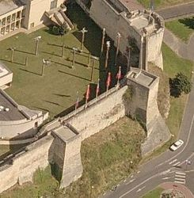
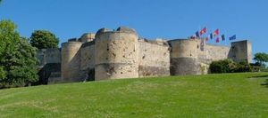
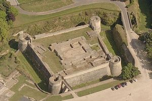
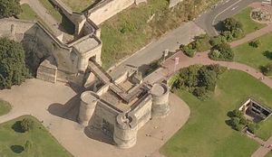
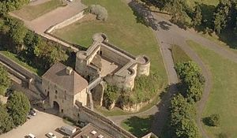
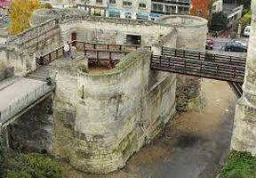
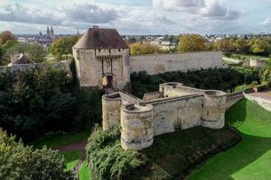
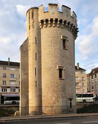
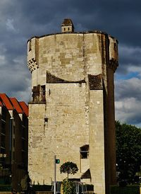

Recensement Jean-Claude Truffet
| Département | 14 — Calvados |
| Canton | Caen |
| Commune | Caen |
| Type d'édifice | Forteresse |
| Période d'origine | XII-XVI |
| Coordonnées GPS | 49° 11' 14,23" Nord, 0° 21' 51,22" Ouest tour Leroy grav 4 GPS : 49° 11' 03" Nord, 0° 21' 33" Ouest |









CAEN Cest vers 1060 que Guillaume-le-Batard, duc de Normandie, installe sa citadelle sur un éperon rocheux. Quelques habitations sy regroupent déjà près de la petite chapelle Saint-Georges. Le site est protégé par la falaise et des fossés taillés dans la roche doù lon extrait les pierres de construction. Lélément le plus important du château est le palais au nord de lenceinte, près de la seule porte daccès. Il est composé dappartements, dune chapelle et dune salle dapparat. Une simple palissade en bois entoure alors la vaste enceinte de 5 hectares, elle est remplacée par des murailles en pierre à la fin du règne de Guillaume-le-Conquérant, son fils, Henri 1er Beauclerc, roi dAngleterre et duc de Normandie, fait édifier, en 1120, le donjon près de la tour-porte du nord, cest un véritable château à lintérieur du domaine. Une nouvelle aula plus vaste est bâtie (actuelle salle de léchiquier), Henri II dAngleterre et ses deux fils, Richard-Cur-de-Lion et Jean-sans-terre, y organisent, en 1182, une fastueuse réception pour les fêtes de Noël. En 1204, le château est pris par Philippe Auguste qui fait réaliser dimportants travaux pour moderniser la forteresse. Le donjon est entouré dune courtine protégée à chaque angle par une tour circulaire et entourée dun profond fossé. Lensemble est doublé au nord par une autre tranchée abrupte. Laccès seffectue par la porte fortifiée dite des champs ou de secours. Enfin, deux tours circulaires (Mathilde et Puchot) sont édifiées à lest et à louest, à la jonction des fortifications de la ville. Le représentant du Roi réside dans la forteresse, dans le logis du Roi (logis des gouverneurs). Au XIVe siècle, lors de la guerre de cent ans, le château de Caen retrouve tout lintérêt stratégique quil avait perdu lors de lannexion du duché de Normandie au trône de France.
CAEN, il devient un élément clé de la défense de la province. Après la prise de la ville par les anglais en 1346, les travaux reprennent, la poterne sud est transformée en véritable entrée fortifiée vers la ville et la porte des champs est pourvue dune barbacane. Reconquis par le Roi de France, en 1450, le château perd tout intérêt stratégique. A partir du XVIe siècle, lusage purement militaire du château se confirme et il nabrite plus quune garnison de 50 à 250 hommes selon les troubles du temps. La population civile de la paroisse de Saint-Georges déserte lenceinte pour la ville qui sétend jusquaux pieds des remparts. Le 18 juillet 1789, le peuple sempare du château et le futur général Dumouriez, gouverneur de la place, se rallie aux révolutionnaires. Après léchec de linsurrection fédéraliste, en 1793, la Convention ordonne la destruction du château. Transformée en prison jusquen 1881, la forteresse devient ensuite une caserne. Lesplanade est alors profondément remaniée, des bâtiments de casernements y sont bâtis, les restes du donjon sont abattus, les fossés comblés et le terrain aplani pour créer une place darmes. Avant la guerre de 1914-1918, 1600 hommes sont cantonnés dans la caserne Lefebvre, les derniers militaires quittent le château en septembre 1940. Pendant le débarquement et la bataille de Caen, la ville est durement touchée par les bombardements et le château néchappe pas aux destructions. A la fin du déblaiement des ruines en 1946, le château réapparaît à la vue des caennais. Lenceinte et ses tours sont restaurées dans les années 1950-1960. En 1963 le logis du gouverneur, refait à neuf, accueille les premiers visiteurs du musée de Normandie. En 1967, le musée des Beaux-Arts, construit à lemplacement des casernes, ouvre ses portes. A partir de 2004, la Ville de Caen entreprend la réhabilitation des remparts nord-ouest du XIIe siècle. La terrasse dartillerie est restaurée et permet linstallation des salles dexpositions en dessous.
Richard-Cur-de-Lion et Jean-sans-terre
"
GPS: 49° 11' 14,23" Nord, 0° 21' 51,22" Ouest tour Leroy grav 4 GPS : 49° 11' 03" Nord, 0° 21' 33" Ouest